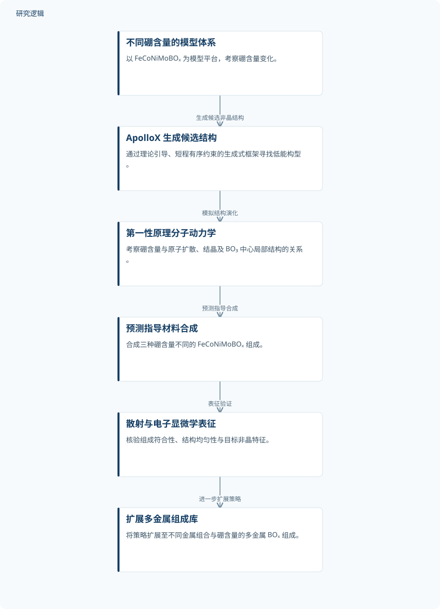

摘要解读
短程有序约束生成设计引导的硼辅助成分复杂非晶氧化物合成
Boron-assisted synthesis of compositionally complex amorphous oxides via short-range-order-constrained generative design
解读更新 2026-10-16 15:05 · 依据公开摘要整理，未核验全文细节
多元素氧化物的非晶结构，能否通过局部原子排列来引导形成？这项研究将短程有序约束引入生成式设计，以含硼体系连接结构预测与合成验证，探索硼促进非晶化的作用及其适用范围。
文章目录
从短程原子有序入手设计非晶氧化物
这项研究关注的是：如何利用短程原子有序，设计成分复杂的非晶固体。作者选择 FeCoNiMoBOₓ 作为模型体系，将硼含量作为调节变量，考察局部结构变化与非晶形成之间的联系。阅读重点不仅是能否合成非晶材料，还包括结构预测能否为合成提供可验证的指引。
ApolloX 生成候选结构，再由模拟指导合成
作者建立了 ApolloX：一个由理论引导、受短程有序约束的生成式框架，用于寻找成分复杂多元素体系中的低能构型。在模型体系中，该框架生成不同硼含量下的候选非晶结构，再通过第一性原理分子动力学模拟考察相关结构演化。
依据预测，作者合成了三种硼含量不同的 FeCoNiMoBOₓ 组成，并使用同步辐射散射和电子显微学进行表征。研究随后将策略扩展到涵盖不同金属组合与硼含量的多金属 BOₓ 组成库，考察其在更广组成范围内的适用性。
依据摘要整理的硼辅助非晶化研究过程


仅概括摘要明确陈述的生成、模拟、合成与表征关系，是依据摘要整理的示意图，并非论文原图。
下载 SVG图示关系说明
实线表示相邻阶段的信息流，虚线表示跨阶段联系或反馈。
不同硼含量的模型体系 → ApolloX 生成候选结构：生成候选非晶结构；ApolloX 生成候选结构 → 第一性原理分子动力学：模拟结构演化；第一性原理分子动力学 → 预测指导材料合成：预测指导合成；预测指导材料合成 → 散射与电子显微学表征：表征验证；散射与电子显微学表征 → 扩展多金属组成库：进一步扩展策略
硼含量增加伴随扩散受抑与局部结构稳定
模拟结果显示，随着硼含量增加，原子扩散和结晶受到抑制，同时以 BO₃ 为中心的局部结构单元趋于稳定，有利于非晶结构形成。这里值得注意的是，摘要把动力学变化与局部结构稳定联系起来，而不只是报告最终是否得到非晶材料。
摘要报告，实验表征确认了所合成材料的组成符合性、结构均匀性和目标非晶特征，并据此验证了预测的硼含量依赖性结构演化。作者进一步将硼引入概括为促进非晶化的有效、可推广手段；这一结论的具体适用边界，仍需结合各组成的详细证据理解。
推广范围与生成框架表现仍需更多细节
仅凭摘要，无法判断各组成的具体硼含量、制备条件、独立样本与重复测量规模，也无法核对组成库的完整覆盖范围。摘要未交代 ApolloX 与其他结构搜索方法的比较、预测误差，以及模拟和表征的具体判据；这些属于当前资料无法判断的内容，不代表论文没有开展相关工作。
阅读启发：关注约束如何连接生成与验证
阅读启发：对于生成式设计，本文值得继续追问的是，短程有序约束如何进入候选结构生成，以及预测中的局部结构特征如何与实验表征对应。进一步阅读时，可重点查看不同金属组合是否支持一致的硼作用解释，而不宜仅凭摘要将材料发现结果外推为结构可靠性或服役性能的改善。
以上为本站阅读启发与建议，不是论文已验证的结论。